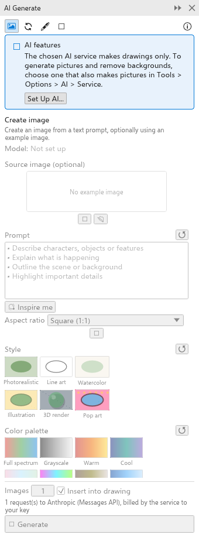

Disegnare e generare con l'IA
TraceDraw può disegnare a partire da una descrizione a parole e creare immagini con un servizio di IA che scegli e configuri con la tua chiave. TraceDraw non ha un'IA propria né un account: nulla viene inviato finché non esegui un comando IA, e allora va al servizio configurato solo ciò che serve a quel comando. Ogni richiesta è fatturata dal tuo servizio; i server di modelli locali sul tuo computer non costano nulla.
Configurare il servizio di IA
Strumenti > Opzioni > AI ha due pagine.

Nella pagina Servizio, configura un unico servizio di IA per tutte le funzioni IA:
- Scegli un Preset: Anthropic, OpenAI, Google Gemini o un server di modelli sul tuo computer (Ollama, LM Studio, llama.cpp server, vLLM). Un preset compila il tipo di servizio e l'indirizzo; Personalizzato accetta qualsiasi indirizzo che parli la stessa lingua delle chat completions di OpenAI.
- Digita la Chiave API del tuo account presso quel servizio (i server locali non ne richiedono). Spunta Ricorda la chiave su questo computer per conservarla; viene allora memorizzata in chiaro nelle tue preferenze.
- Scegli il Modello, e il Modello di immagini per i servizi che sanno creare immagini (OpenAI, Google Gemini o un indirizzo personalizzato con un modello di immagini).
- Fai clic su Test Connection. Chiede al servizio i suoi modelli e dice quanti ne ha, oppure mostra il suo errore.
Mostra la barra dei prompt mette la barra dei prompt IA sopra la tavolozza dei colori.
Generale

- Turn on AI features (attivo): se disattivato, ogni comando IA è disabilitato.
- Services: se Drawings e Pictures sono Ready o Not set up.
- Features: cosa fa ciascun comando IA.
- What is sent: solo ciò che serve a un comando, al servizio configurato, quando lo esegui.
Disegnare con le parole
Digita una richiesta come "una bicicletta rossa con le ruote blu" o "ingrandisci il cerchio e metti il titolo sotto", nella barra dei prompt o nella modalità Disegna con le parole del pannello AI Generate (Oggetto > AI Generate > Draw with Words), e premi Disegna o Enter. Il servizio scrive uno script per il disegno, che TraceDraw esegue come un unico passaggio di annullamento. La conversazione viene conservata, così puoi chiedere modifiche; Nuova conversazione ricomincia. Apri in Script mostra lo script.
Il pannello Generazione IA
Il pannello AI Generate (Strumenti > AI Generate, o il pulsante Generazione IA della barra degli strumenti standard) crea immagini con il modello di immagini del tuo servizio.

Scegli una modalità con i pulsanti in alto:
- Crea immagine: un'immagine a partire da una descrizione. Ispirami propone un'idea. Scegli le proporzioni.
- Rielabora immagine: modifica un'immagine come descrivi (in partenza la bitmap selezionata). Le richieste già pronte includono mockup, restauro di foto, colorazione di schizzi, sostituzione dello sfondo, cambio di stagione e ricolorazione.
- Crea vettori: un'illustrazione trasformata in forme modificabili, o un'immagine ricalcata in curve o un disegno SVG scritto dal modello di testo.
- Disegna con le parole (vedi sopra).
Ogni modalità ha un Modello, un'immagine di riferimento facoltativa (Usa selezione o Importa file), il Prompt e le tessere Stile e Tavolozza dei colori. In basso, imposta il numero di Immagini (da 1 a 4) e Inserisci nel disegno, poi fai clic su Genera. I risultati restano nel pannello; fai clic su uno per inserirlo.
Altri comandi IA
- Bitmap > Rimuovi sfondo con IA mantiene il soggetto di un'immagine e rende trasparente il resto.
- AI Art Styles ridipinge la selezione in uno di otto stili.
Finché l'IA è disattivata o non configurata, i comandi sono disabilitati e il loro suggerimento spiega perché; il pulsante Set Up AI apre la pagina di opzioni giusta.